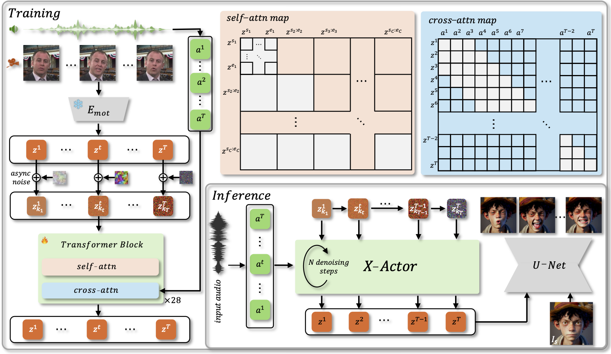

Pipeline

X-Actor decouples video synthesis from audio-conditioned motion generation, operating in a compact, expressive, and identity-agnostic facial motion latent space. Specifically, we encode talking video frames into sequences of motion latents using a pretrained motion encoder. These latents are corrupted with asynchronously sampled noise levels and denoised using an autoregressive diffusion model trained with a diffusion-forcing scheme. Within each motion chunk, we apply full self-attention to preserve fine-grained expressiveness, while causal cross-chunk attention ensures long-range temporal coherence and context awareness. Each motion token attends to frame-aligned audio features via windowed cross-attention, enabling accurate lip synchronization and capturing transient emotional shifts. At inference time, we autoregressively and iteratively predict future motion tokens with a monotonically decreasing noise schedule over the historical motion context. Finally, alongside a single reference image, we render the predicted motion sequence into high-fidelity, emotionally rich video frames using a pretrained diffusion-based video generator.
Motion Diversity
More Video Results
Compare with Recent Methods
Ablation Study
Ethics Concerns
The images and music used in demos are from public sources or generated by models, and are solely used to demonstrate the capabilities of this research work. If there are any concerns, please contact us (chenxuzhang@bytedance.com) and we will delete it in time.